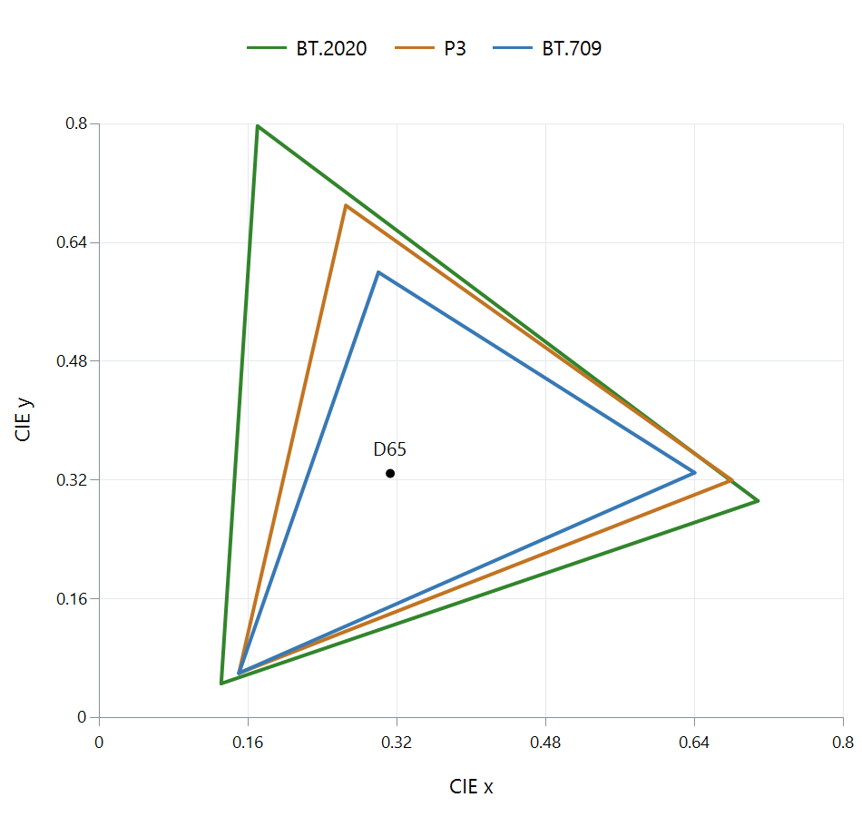

Gamut Mapping
Gamut mapping adapts colors that fall outside the range the target color space or display can reproduce.
A neon green can be correctly described in BT.2020 coordinates and still lie outside the colors a BT.709 destination can produce. Gamut mapping chooses a reproducible replacement while managing the relationships among color, brightness, and neighboring detail.

Primary-coordinate plot, with luminance omitted. The line colors identify the gamuts rather than displaying their extreme primaries.
First convert coordinates without discarding the desired color
RGB values specify mixtures of particular primaries. A color conversion finds another set of coordinates for the same requested color. If the requested color lies outside the target triangle, some new coordinates can be negative: the target would need to subtract one of its primary lights to reproduce it exactly.
Take the full BT.2020 green primary, with linear RGB 0, 1, 0 and D65 white. Converting to linear BT.709 coordinates using the published primaries gives approximately:
| Target component | Converted value |
|---|---|
| Red | −0.588 |
| Green | 1.133 |
| Blue | −0.101 |
The coordinate transform is mathematically describing the requested color. The negative components and over-range green show why the target cannot directly reproduce it within zero-to-one component limits. A floating-point intermediate can retain those values until a mapping decision is made.
See what independent clipping does
Clipping each target component to zero through one changes the triplet to 0, 1, 0, the BT.709 green primary. That is an achievable color, but it has another chromaticity from the original BT.2020 green. Its location has moved to the smaller triangle's corner.
The same operation can merge distinctions. A BT.2020 green at linear level 0.9 converts to approximately −0.529, 1.020, −0.091. Clipping again gives 0, 1, 0. Source levels 0.9 and one have now reached the same target triplet.
This example combines gamut reach with a component-output ceiling. It shows why merely transforming coordinates and clipping them can remove both color and light differences. The transformation identifies the problem; the mapping chooses how to resolve it.
Compress color relationships deliberately
A mapping can reduce chroma toward a neutral color, alter lightness, or use a combined color-volume strategy. In a perceptual hue/chroma representation, a method can try to keep the hue direction while reducing chroma until the target contains the color. Its chosen representation affects how that path behaves.
Soft compression can start near the boundary, bringing extreme colors inward more gradually. It can preserve distinctions that hard clipping merged, but may also modify colors near the boundary that already fit. Broad desaturation moves every color inward, including ordinary colors that did not require much adjustment.
| Decision | Image relationship affected |
|---|---|
| Reduce chroma | Saturation and separation among vivid colors |
| Change lightness | The object's brightness relative to its surroundings |
| Clip components | Component proportions and potentially hue/detail |
| Preserve interior colors | Limits how much of the image participates in compression |
A smaller target cannot retain every source color and every difference unchanged. The useful strategy preserves the relationships that matter to the produced scene, rather than just satisfying component bounds at the end.
Combine the decision with brightness fitting
In HDR-to-SDR conversion, the destination commonly has both a smaller light range and a smaller gamut. Brightness adaptation can change how a saturated color fits within the output color volume. A very bright colored light may need joint brightness/chroma treatment.
A neutral-gray curve isolates brightness and cannot show that behavior. Inspect a red stage light, flame, or shop sign alongside gray surfaces when comparing an Emby rendition. Keep the source and output primaries, transfer, matrix, and range correctly interpreted so that a signaling mismatch is not mistaken for a deliberate gamut mapping.
The HDR-to-SDR walkthrough places the color decision within the complete conversion. The negative-component example explains why an otherwise correct coordinate transform still needs that decision before producing the target's final values.